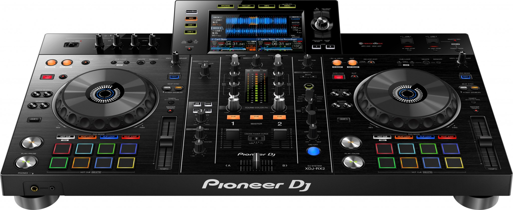

Precio:7'035.000

ESPECIFICACIONES
El XDJ-RX2 es una actualización del popular XDJ-RX, combinado con características y rasgos de la serie insignia NXS2. El sistema todo en uno de 2 canales, ofrece una experiencia profesional como DJ cuando lo conectas a rekordbox a través de tu ordenador portátil o con música almacenada en un dispositivo USB.